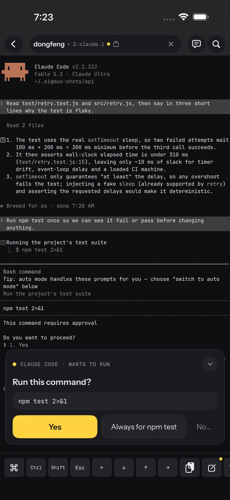
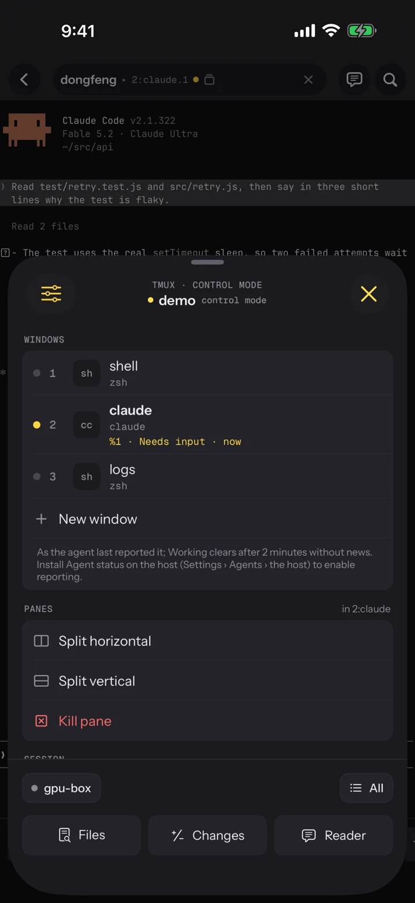
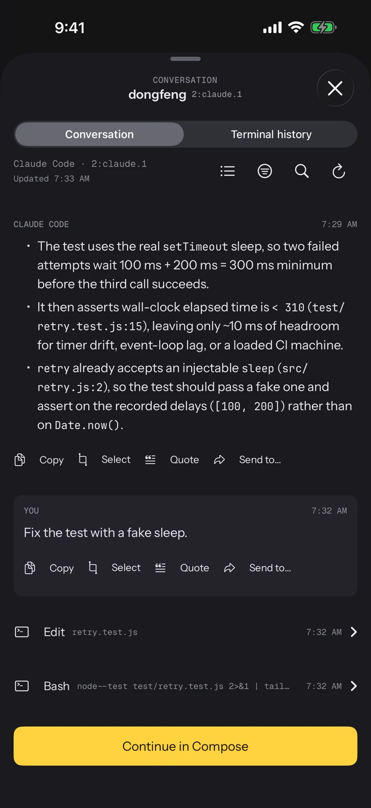

An SSH terminal for people who live in tmux.
On iPhone and iPad. Your tmux windows and panes become native controls, and Claude Code, Codex and OpenCode reach your phone when they need an answer.
Free to try for 14 days. Then one purchase, with Family Sharing. No subscription.

tmux without the prefix key.
- Windows and panes you can tapSigmux speaks tmux control mode, so switching, splitting, renaming and killing are a palette, not a chord on a glass keyboard.
- Keys a shell needsCtrl, Alt, Esc, Tab and arrows in a row you can hold or lock.
- Selection that behaves like iOSHandles and a magnifier. Links and file paths open with a tap.
- Everything else still worksClassic
tmux attachand plain shells, with keys or passwords. Keys stay in the iOS Keychain, behind Face ID if you choose.

Your agents ask. You answer from wherever you are.
- A notification when an agent stopsClaude Code, Codex and OpenCode tell your phone when they finish or need you.
- Approve or deny on the notificationNo need to open the app. In a session, a card above the keys answers the agent waiting in that pane.
- Read the conversation as textReader shows what the agent said without the terminal's wrapping, with copy and quote.
- Write to it like a personCompose gives you autocorrect and dictation, takes photos and files, then sends the lot to the agent.

Look at what changed before you say yes.
Read remote files, Markdown, HTML and images without leaving the session. Review git changes and quote a hunk back to the agent. Share text and files from other apps straight into Compose.
Your servers, your traffic.
- No account
- Nothing to sign up for. Your traffic goes from your phone to your servers over SSH.
- No analytics
- The app does not report what you do, and this page loads nothing from anyone else.
- Sealed notifications
- Your host encrypts each notification for your phone. The relay in between passes it on and cannot read it.
Control mode needs tmux 3.2 or newer on the host; from 3.3 each window keeps its own size. Agent notifications need python3 there; Sigmux's own push notifications need OpenSSL 1.1.1 or newer. The app's interface is in English.